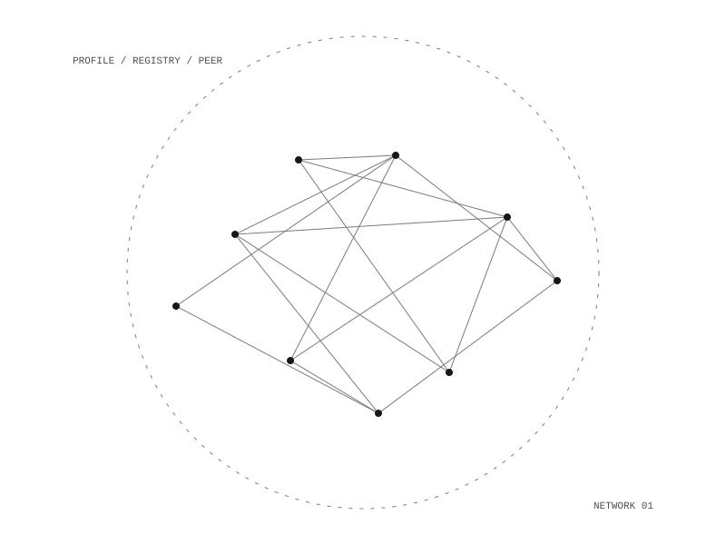

23 / project
Cyborg Support
A federated project-discovery network
A local MCP profiles your projects — what they do, how mature they are, how reusable they are — and a hosted registry MCP lets someone else ask “is anyone already building this?” and get a real answer.

The case it exists for
A project that is 70% built and has not been touched in 14 months.
Status
The scanner profiles real repositories, the maturity rubric is graded against a checked-in ground
truth, and all four services run. Nothing is hosted yet, so publish_profile reaches the
publisher and fails at the last hop — by design, not by accident.
Repository — private
All work